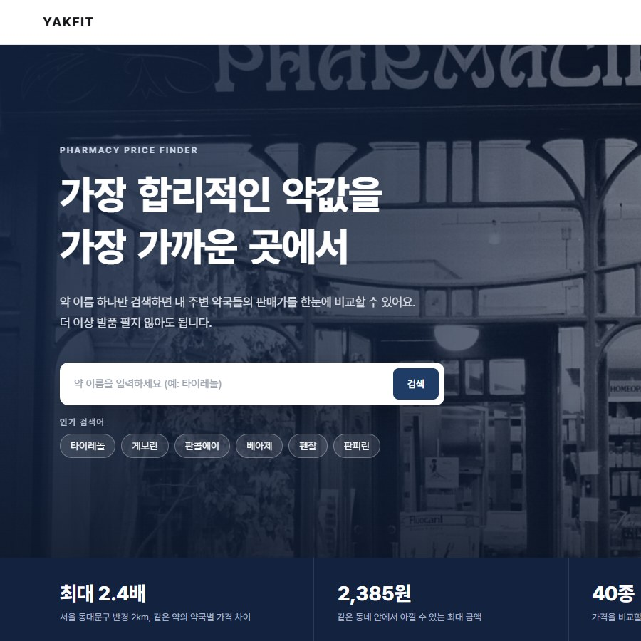
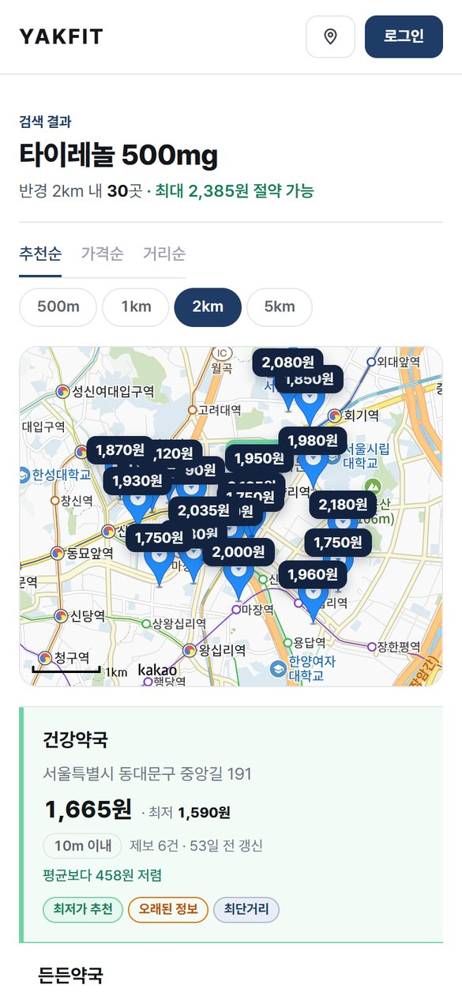
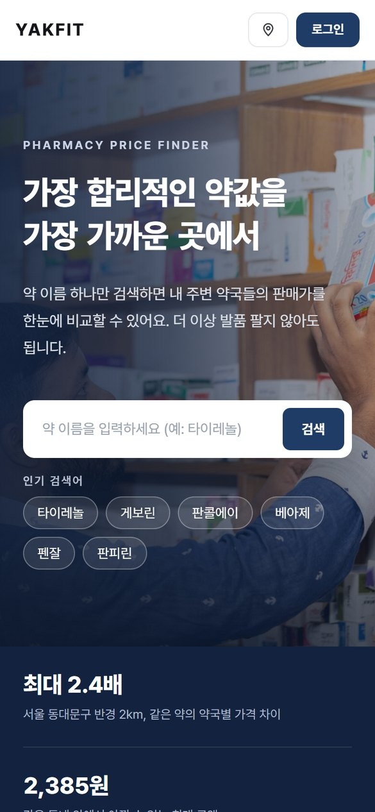
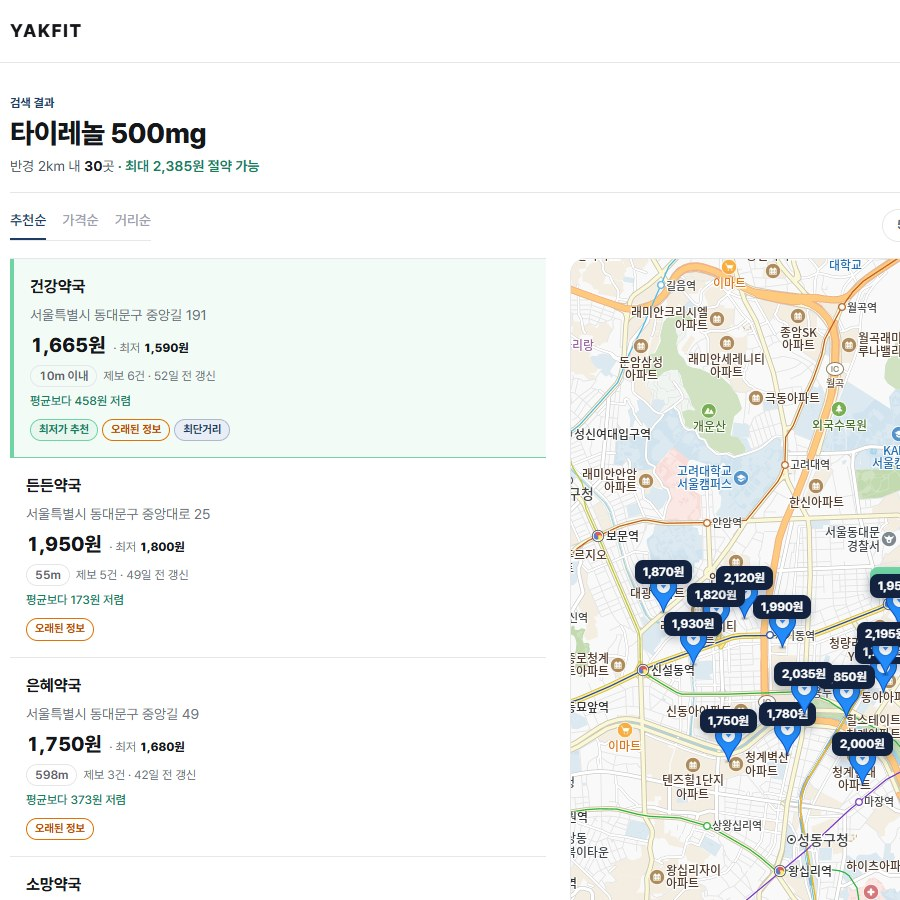
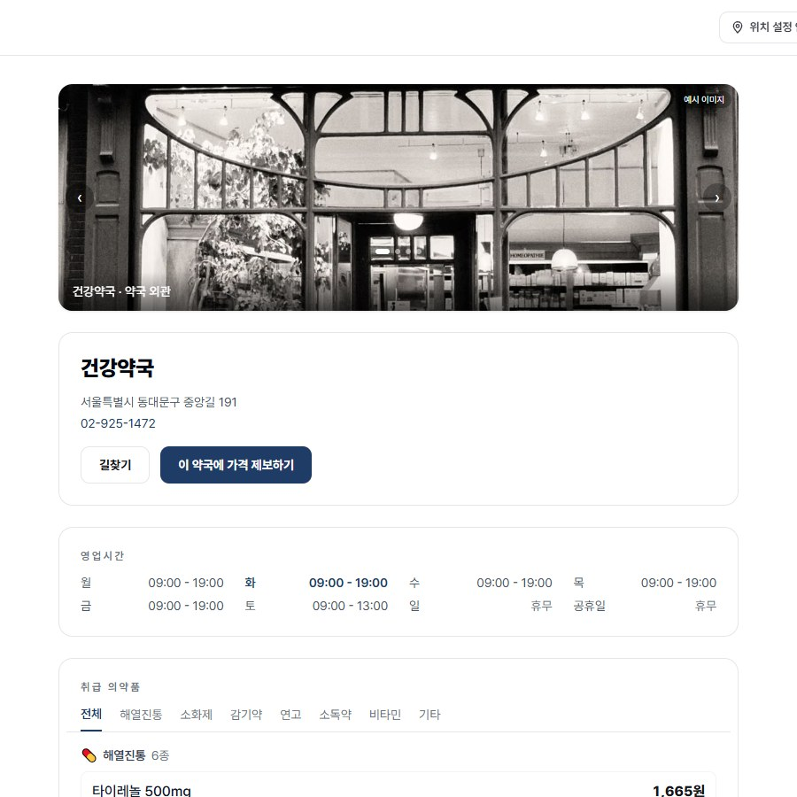
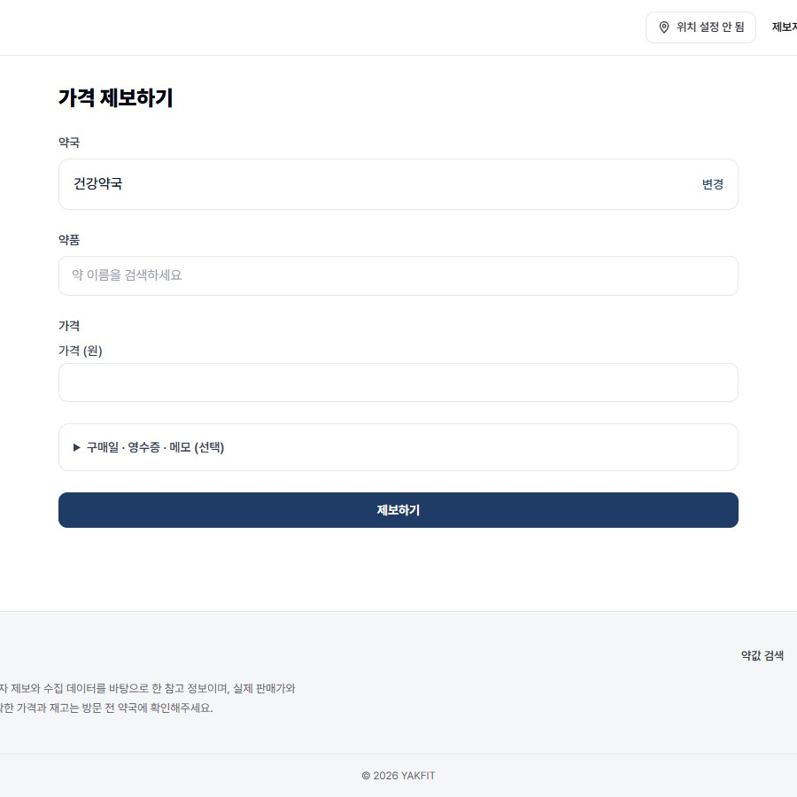
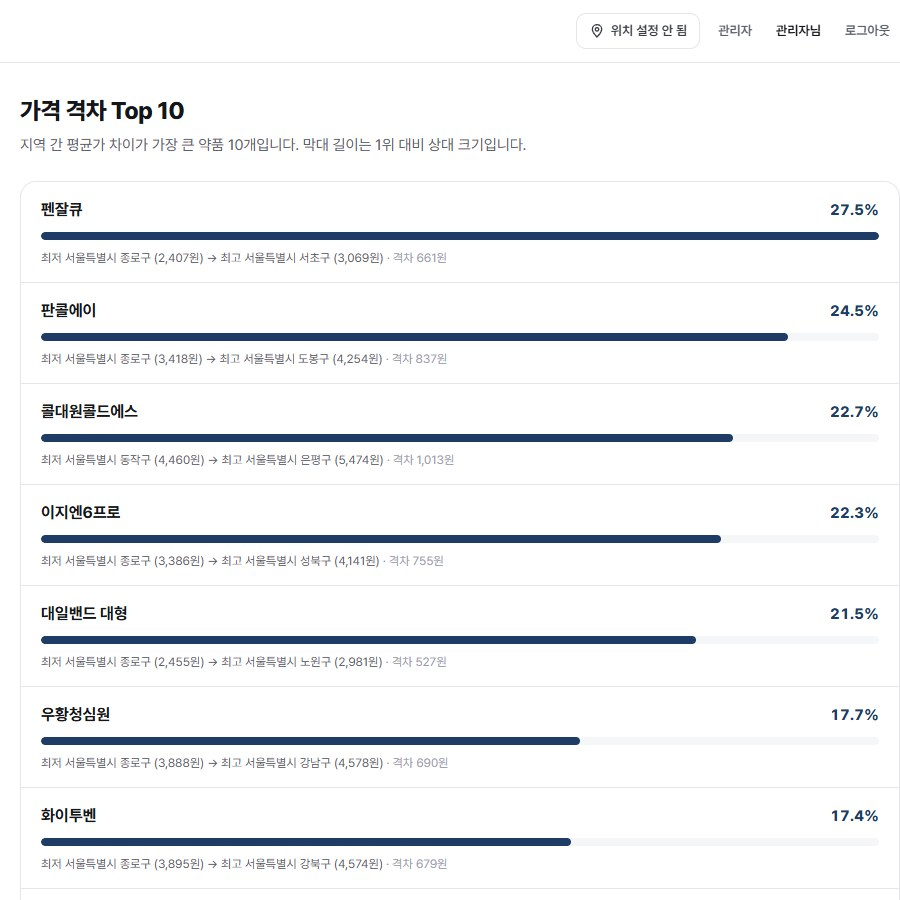

01PERSONAL PROJECT · 2026
MY ROLE 기획 · 디자인 · 프론트엔드 · 백엔드 개인 프로젝트 — 처음부터 끝까지 100% 단독 구현
YAKFIT
약 이름 하나로 근처 약국의 가격을 비교하고
가장 합리적인 곳을 찾는 서비스
Next.js 16 · TypeScriptTanStack Query · Redux Toolkit2026.09.15 — 10.27
MY ROLE 기획 · 디자인 · 프론트엔드 · 백엔드 개인 프로젝트 — 처음부터 끝까지 100% 단독 구현

Period43일기획부터 배포 전 점검까지
Commits114개프론트 72 · 백엔드 33 · 문서 9
Screens13화면사용자 7 · 관리자 6
Components33개커스텀 훅 5 · Redux 슬라이스 3
Data87,614건가격 제보 · 약국 1,040 · 약품 40
01MOCKUPDESKTOP · MOBILE
데스크톱도 모바일도 같은 흐름으로



02ABOUT SITE
같은 약, 약국마다 다른 가격을 한눈에
일반 의약품은 판매자가격표시제라 같은 제품도 약국마다 최대 2배 넘게 가격이 달라요. 그런데 온라인으로 비교할 곳이 없어 직접 발품을 팔아야 해요. YAKFIT은 약국 1,040곳 · 약품 40종 · 가격 제보 87,614건의 데이터로 근처 약국의 가격을 모아 보여 줘요.
약 이름 검색→근처 약국 가격 비교→추천 · 가격 · 거리순 정렬→약국 상세→가격 제보↺대표 가격에 바로 반영 · 전 구간 1인 개발
03MY SCREENS13 SCREENS
제가 만든 화면

- 카카오맵 가격 말풍선, 반경 500m ~ 5km 4단계
- 추천 · 가격 · 거리순 정렬 3종, 이유를 보여 주는 배지 3종

- 가격 · 위치 · 연락처를 한 화면에서 확인
- '이 약국에 가격 제보하기'로 바로 이어지는 흐름

- 로그인으로 이동했다 돌아와도 작성 중인 초안 유지
- 같은 약국 · 약품은 하루 1회만 제보

- 제보 검토, 약품 · 지역별 통계, 가격 격차 Top 10
- Recharts로 가격 분포 · 추이 시각화
04FRONTEND지향점 01 · 02
프론트엔드 구현 포인트
01STATE서버 상태 · 클라이언트 상태 분리
검색 · 자동완성 · 상세 같은 서버 데이터는 TanStack Query로 캐시하고, 위치 · 로그인 · 제보 초안만 Redux 슬라이스 3개로 관리했어요.
02DEBOUNCE자동완성 300ms 디바운스
useDebouncedValue 훅으로 입력이 멈춘 뒤에만, 검색어가 있을 때만 요청해요. ↑ ↓ Enter 키보드 선택과 ARIA 목록 연결도 넣었어요.
03AUTH FLOW로그인을 거쳐도 제보 내용 유지
proxy.ts가 보호 경로 3개를 로그인으로 보낼 때 비워지는 초안을 sessionStorage와 동기화해 돌아오면 그대로 이어서 써요.
04MAP SDK카카오맵 SDK를 타입 안전하게
autoload=false로 준비된 뒤에만 그리고, 쓰는 API만 TypeScript로 선언했어요. 가격 말풍선은 커스텀 오버레이, 결과 범위에 맞춰 지도를 이동해요.